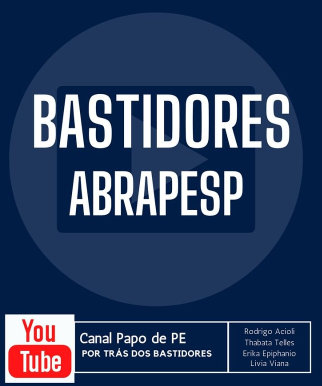
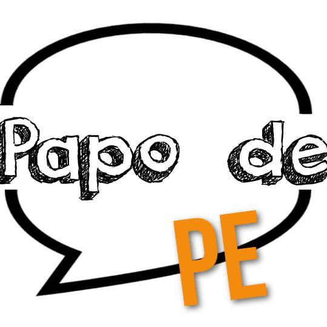

O MAIS NOVO PROGRAMA DO CANAL PAPO DE PE.
Bastidores da ABRAPESP está no canal PAPO DE PE no YouTube. A proposta é apresentar a Associação Brasileira de Psicologia do Esporte para o público. O primeiro programa foi ao ar no dia 26 de abril, às 10 horas com a presença da Thabata Telles (atual presidente da associação), Erika Epiphanio (vice-presidente), Livia Viana (tesoureira) e Rodrigo Acioli (ex-presidente). Bastidores vai ao ar todas as últimas segundas-feiras do mês. Você não assistiu? Clique na imagem abaixo e assista.
PAPO DE PE
Papo de PE foi ao ar pela primeira vez em 3 de agosto de 2016. Rodrigo Pieri, idealizador, com a história…
Eu fiquei muito chateado porque achava que alguns psicólogos do esporte deveriam estar acompanhando algumas equipes nas olimpíadas, e não estavam. Daí eu chamei três deles: Rodrigo Falcão, de São Paulo; Mauricio Marques, do Rio Grande do Sul e Thaise Coutinho, da Bahia, os três toparam na hora e passamos o período das olimpíadas discutindo e falando dos jogos e da psicologia do esporte. Quando terminou as olimpíadas, paramos. Em 2020 fui convidado pela Associação de Psicologia do Esporte do Rio de Janeiro para fazer uma entrevista com Mateus Vasconcelos. Essa entrevista me estimulou e resolvi voltar com o projeto. Comecei com PE Entrevista falando de diferentes abordagens da psicologia. Depois uma rodada com treinadores e treinadoras, falando sobre todas as modalidades; depois com psicólogos sobre modalidades; em seguida as diferentes instituições que regem a psicologia do esporte do Brasil, dos congressos… Tudo com a proposta de tornar a psicologia do esporte acessível às pessoas, porque falamos muito entre nós, nos congressos, e tal, mas no YouTube abre para todos. No final do ano passado convidei o Alberto Filgueiras, para comentar os eventos da semana. São mais de 30 episódios, até hoje, que vai ao ao todas as terças feiras. E concomitantemente o Rodrigo Acioli e o Rodrigo Falcão mandaram mensagens sugerindo tornar o Papo de PE Canal da Psicologia do Esporte Nacional. Achei ótimo. Assim o Rodrigo Falcão passou a publicar o programa Psicologia no Esporte, uma ou duas vezes por mês. Rodrigo Acioli apresenta o Psicologia do Esporte no Divã. Mateus Vasconcelos, o Norteando, falando da psicologia do esporte na região norte. Aí chamei as associações e ABRAPESP topou.
Os programas estão organizado em PLAYLISTS: Psicologia no Esporte; Norteando; Papo de PE Entrevista – modalidades na perspectivas dos treinadores, modalidades na perspectiva da psicologia, diferentes instituições, diferentes abordagens da psicologia; Papo de PE Comenta, programa da AMPEP; Pesquisa em Foco (do grupo de trabalho da ANPEPP), Esporte no Divã e Bastidores da ABRAPESP.
Conheça o Canal PAPO DE PE – Clique na imagem
